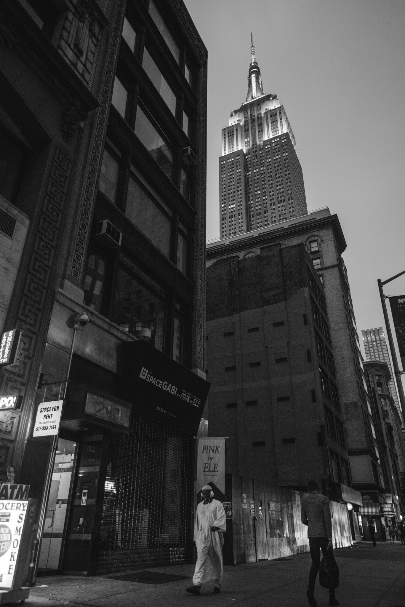
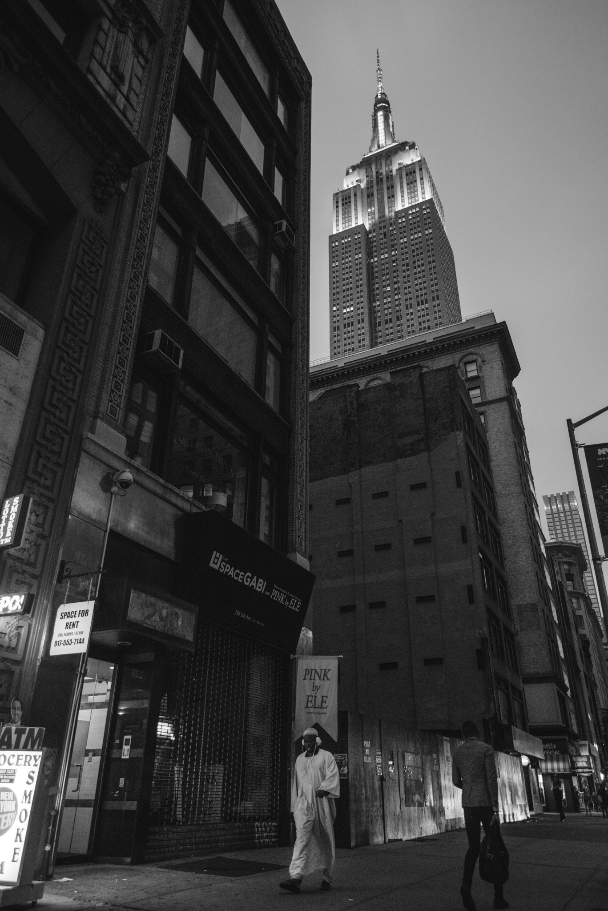

This does the following :
pixpipe.UrlImageReaderpixpipe.UrlImageReader pixpipe.ImageBlendExpressionFilter pixpipe.CanvasImageWriterpixpipe.ImageBlendExpressionFilter is generally slower.
The original image and the mask:
 

The blended image, only the lighter parts of the second images are visible: